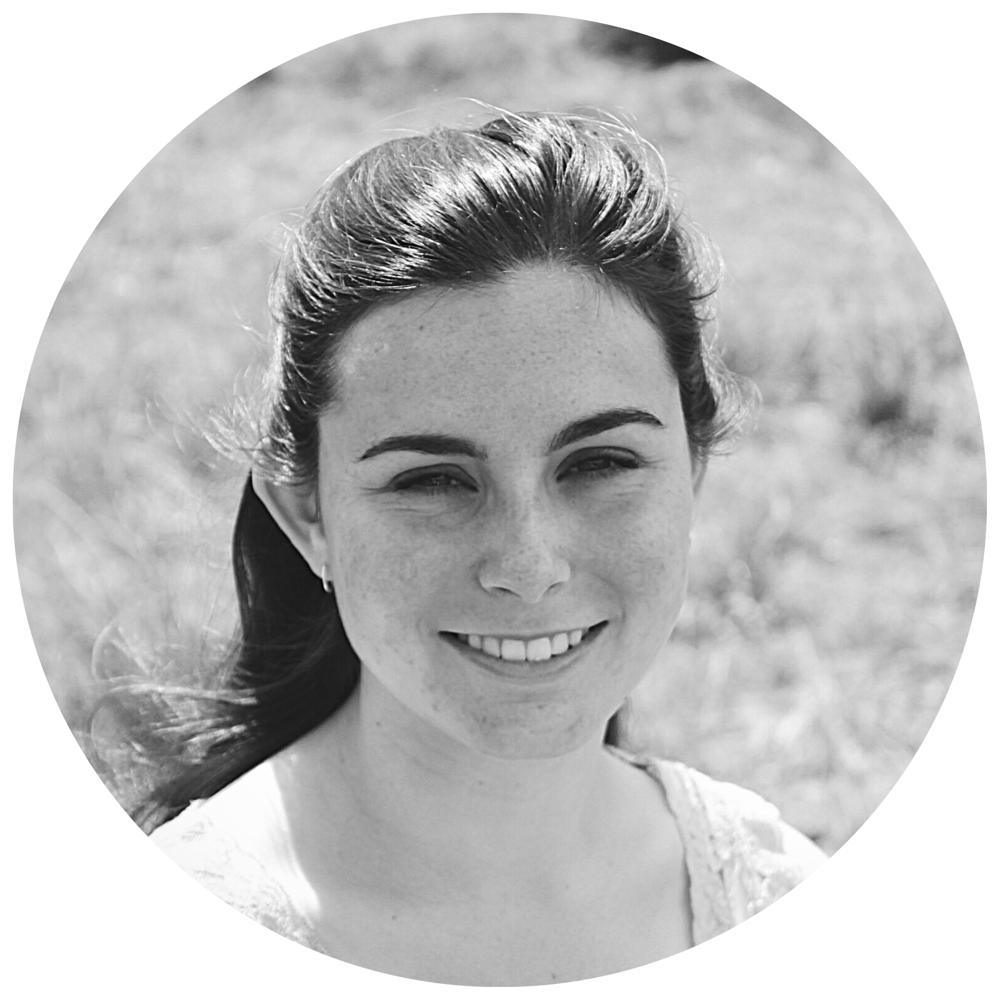

<div class="content content--about">
  
  <div class="content__body content__body--about">
      <div class="body-header">A Bit About Me</div>
      <div class="body-buttons">
        <span class="round-button"><a class="round-button__center-text" target="_blank" href="https://docs.google.com/document/d/1pOtIYLuas7ouxSOSKnOWrnuRGOe2vjj8vuve_EQMMv4/edit?usp=sharing">My Résumé</a></span>
        <span class="round-button"><a class="round-button__center-text" target="_blank" href="https://hannahgrintonphotography.pixieset.com/">Pixiset</a></span>
        <span class="round-button"><a class="round-button__center-text" target="_blank" [routerLink]="['/contact']">Contact</a></span>
      </div>
      <div class="body-paragraph">
        I am a programmer, developer, photographer, musician, math-lover, artist, designer, reader, and traveler - from rural Nova Scotia, Canada. I grew up snowmobiling, hiking, four-wheeling, dirtbiking, bicycling, tree-climbing, and "helping" my dad change tires on the cars. I am a graduate of Nova Scotia Community College, where I studied IT Web Development and received the NSCC highschool entrance award for academic excellence.
      </div>
  </div>
</div>
